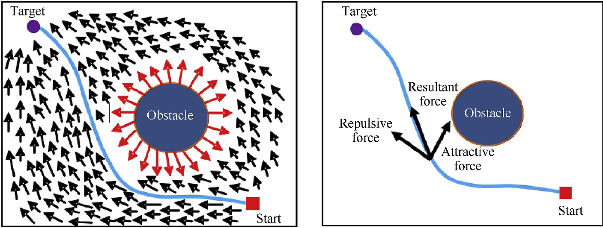
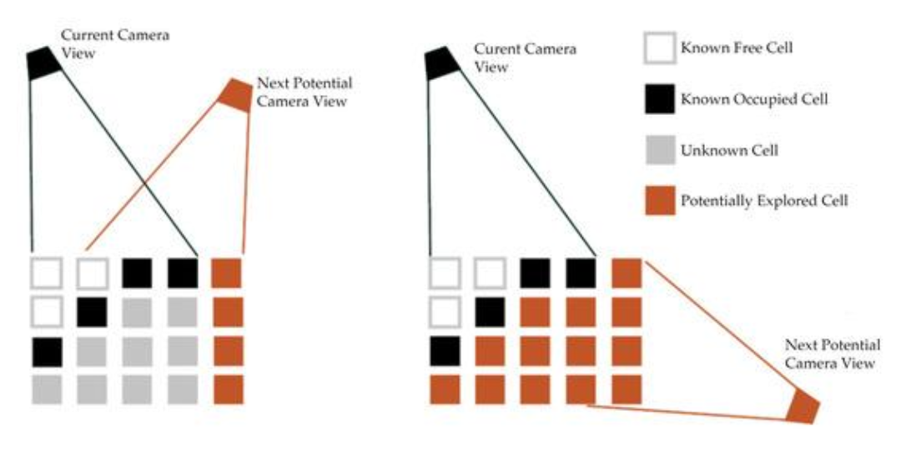
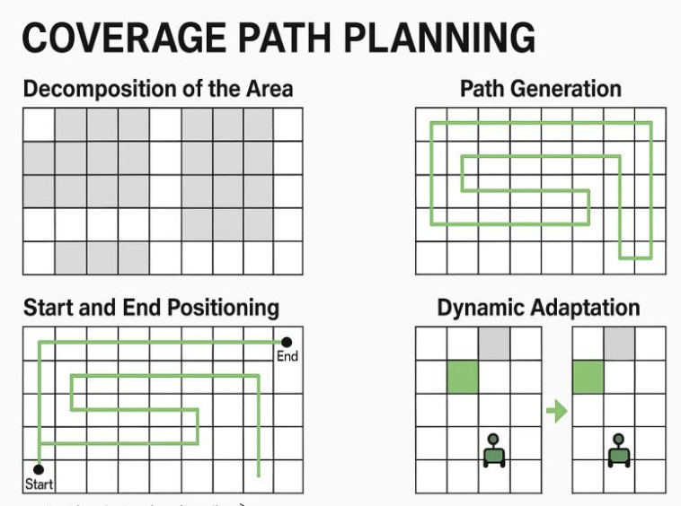
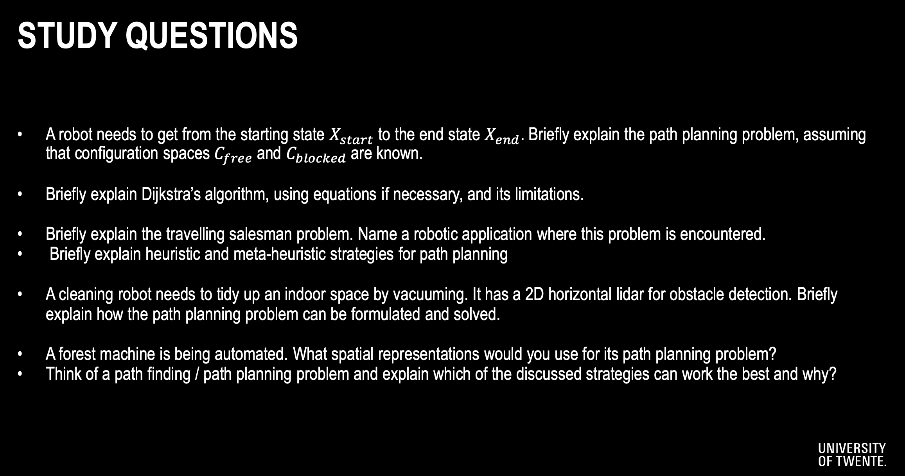

Lecture from RPCN. Related to the Navigation part.
Table of contents with helpful questions/answers
Where to go?
- Point X or Area A
How to get there?
- Path planning for a route, i.e., planned trajectory. Which routes are valid?
What if we are looking for a path but do not yet know where it might be?
- Path finding
- Exploration action
What if we want to fully explore something, e.g. see a large object of interest from all sides?
- Next best view planning
What if we visit a place we have visited before?
- Loop closure
A configuration space C is the set of all possible states (configurations) that a system can be in. Each point in this space represents one unique configuration of the system.
For a robot/drone, the configuration describes:
- Where it is (position)
- How it’s oriented (rotation/attitude)
The SO and SE groups explained briefly:
SO: The special orthogonal group, denoted as , is a group of matrices that have the property of being both orthogonal and having a determinant of 1. The Rotation Matrix is a special orthogonal group.
SE: The upper left corner (3×3) is the rotation matrix, the right side is the translation vector (3×1), the lower-left corner is 0 vector (1×3), and the lower right corner is 1 (1×1). This set of transform matrix is known as the Special Euclidean Group.
So, as a rule of thumb, if translation exists ⇒ . If only rotation ⇒
WHAT IS THE CONFIGURATION SPACE OF A QUADROTOR DRONE WHILE AIRBORNE
SE(3) — 3 rotations, 3 translations in free air.
WHAT IS THE CONFIGURATION SPACE OF AN AUTONOMOUS CAR DRIVING ON A ROAD
SE(2) — translate forward, backwards, rotate because of the heading angle
SO(2) would mean the car is fixed in position but can only rotate in place (like a compass needle).
WHAT IS THE CONFIGURATION SPACE OF A WAREHOUSE FORKLIFT
SE(2) h.
- SE(2): Position on the warehouse floor + orientation angle = 3 DOF
- h: Height of the fork (can lift up and down) = 1 DOF
Graph Notation
Path-finding problems are often formulated with graphs. One such algorithm is Djikstra’s Algorithm. The main concept is to loop over all links of the current node and update distances if a shorter path was found.
- Nodes are labelled, edges have a cost.
If we take a maze for example, it’s basically a 2D grid with some grid points blocked by obstacles. Each obstacle is just a missing link between two grid points.
A-STAR or A*
As a rule of thumb, if we do not know where to search from, we use Dijkstra. But if we do know where we want to end up, then we can leverage A* — a heuristic function. A heuristic function is a way to inform the search about the direction to a goal.
A* finds the shortest path from a start node to a goal node on a static (unchanging) map.
Instead of minimizing the path cost distance from the start, we attempt to minimize
- is the next node in the graph,
- is the heuristic function that estimates the remaining path to be travelled
- Typically Manhattan Distance (L1) or Euclidean Distance (L2)
When to use A*?
Imagine when the search tree is huge (dense environment). A* reduces the number of tree nodes required to be visited.
Also when we know where we want to end up or start from. If obstacles appear after planning, A* must be run again from scratch.
D* or Dynamic A*
D* fixes the earlier problem and does not mind environments that are partially known or change over time.
- When new obstacles are discovered, D* updates only the affected parts rather than recomputing the entire path.
- Reuses previous search results to update the path incrementally.
| Feature | A* | D* |
|---|---|---|
| Environment | Static | Dynamic/unknown |
| Replanning | Not efficient (must restart) | Efficient (incremental updates) |
| Memory usage | Lower | Higher (stores search tree) |
| Real-time robotics | Not ideal | Designed for it |
Use D* Lite whenever you want to implement this.
Potential Fields
Artificial Potential Fields are another approach to guiding robots into obstacle-filled environments. The basic idea here is to construct a smooth function over the extent of the configuration space, which has high values when the robot is near to an obstacle and lower values when it’s further away.
Create
- an attractor field for the goal
- Repulsive field for the obstacles

This algorithm is real-time since the computations involve gradients which are very fast (I presume because they are parallelazableqweq. you can compute them in parallel on GPUs :) ). It is also reactive: the robot does not need a full map; it can react to local sensor data.
Attractive Potential Fields
- Can be constructed by considering the distance between the current position of the robot and the desired goal location .
Repulsive Potential Fields
- Now in addition to getting to the goal, we also want the robot to avoid the obstacles in the environment.
Issues with Local Minima
The simple gradient based control strategy may or may not converge the goal depending upon where the robot starts. Therefore, it does not guarantee global optimality.
I would probably only use these in local searches.
NP-hard problem: Exact solutions scale poorly with the number of locations(idk what that means).
Example of NP-hard problem: Traveling Salesman Problem
How to solve NP-hard problems: through brute force or heuristic methods.
Next Best View Planning (NVP)
NVP is a strategy used to decide where a sensor (camera, LiDAR, drone, robot) should move next to gain the most useful information about an object or environment.
- In TSP, all locations are known beforehand, while in NVP, viewpoints are dynamically generated based on the environment.
Workflow:
- Represent each potential sensor position or orientation as a node in the graph.
- Nodes must capture the constraints of sensor capabilities, such as field of view, range, and orientation
- Assign weights (edges) between nodes
- Include information gain as a secondary cost or priority measure for nodes.
Context:
Imagine a drone is scanning a building façade to create a complete 3D model.
Step 1: Drone takes first scan. Starts at point A and captures a depth image or LiDAR scan.
Step 2: Identify Incomplete Surface Elements (ISEs).
Step 3: Generate several candidate viewpoints.
Step 4: Compute “visibility gain” from each candidate viewpoint. For each candidate viewpoint perform ray casting/ray tracing and count how many ISE (green) voxels are visible. Score them.
Step 5: Choose the best viewpoint.
Step 6: Drone flies to the NBV and scans again.
Step 7: Repeat until the entire surface is reconstructed.

Coverage Path Planning (CPP)
Definition: Determine a path that ensures complete coverage of a given area or environment while optimizing certain objectives, such as minimizing travel distance, time, or energy consumption. This is not about generating the shortest path from A to B, but to cover an entire area.
Key subproblems in CPP:
- Decomposition of the Area
- Dividing the environment into smaller, manageable cells.
- Path Generation
- Determining the sequence of movements within and between subregions to ensure complete coverage.
- Start and End Positioning
- Identifying optimal starting and ending positions for the path to minimize travel costs.
- Dynamic Adaptation
- Updating the plan in real-time when changes occur in the environment (e.g. new obstacles).

Approaches to Solve CPP:
- Grid-Based Methods
- Represent the environment as a grid of cells, marking each cell as visited during traversal.
- Graph-Based Methods
- Model the environment as a graph, where nodes represent regions, and edges represent traversable paths
- Continuous Methods
- Treat the environment as a continuous space and solve using coverage strategies like sweeping or spiral patterns.
- Heuristics
- Use algorithms like backtracking, greedy methods, or genetic algorithms to optimize path planning
Some applications could include vacuum cleaning robots, to not miss a spot; Agrorobotics (you want to harvest everything), robotic inspections over areas; mapping and exploration.
Meta Heuristics
They are high-level optimization strategies that can handle non-linear & NP-hard problems. through global search, randomness. They are inspired by natural processes.
One example would be Genetic Algorithms (Survival of the fittest).
The professor simply decided to give endless bullet points. whatever I guess — it’s not really ‘robotics’, is it?
They converge slow and have many parameters to tune. It’s 02:49 AM I am done.
